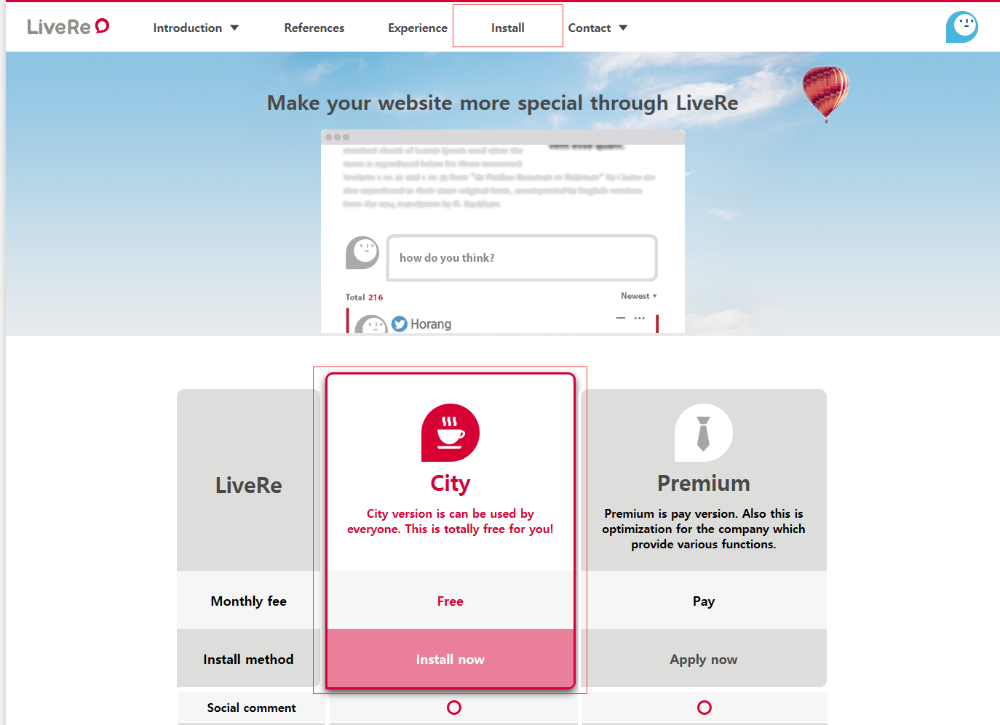
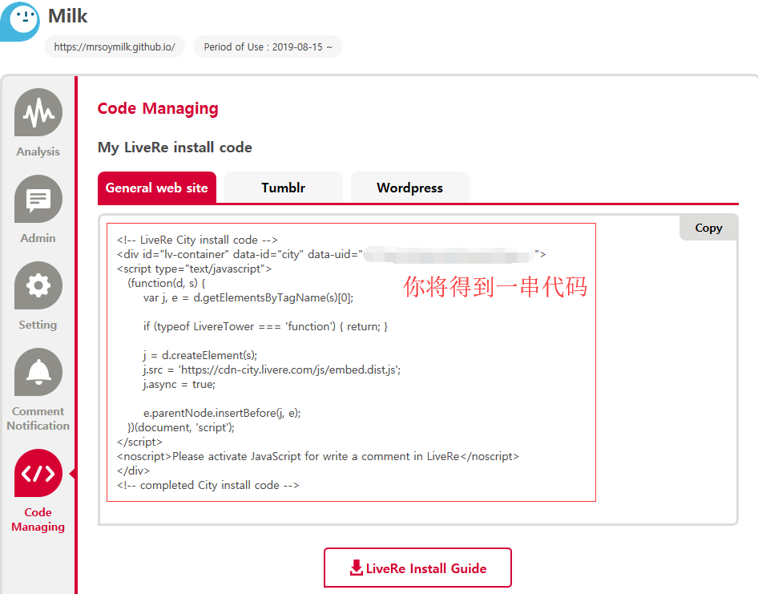
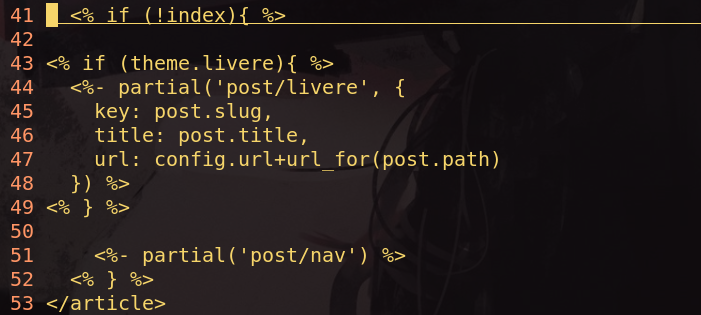

Hexo配置，Landscape主题
- categories
- >
- 博客
写在前面
一些配置，更好地使用Hexo
Hexo绑定域名
Hexo 推送到 Github 时每次都会清除域名，那么需要做啥？
前提：我的博客文件夹：hexo_blog
- 在
hexo_blog/source新建文件CNAME，注意就是单纯的CNAME, 无杂质 - 在
CNAME文件中加入你的域名
cat CNAME
https://blog.soymilk.fun- 部署到远端即可
添加网页图标
我的博客文件夹：hexo_blog
网页图标位置：
hexo_blog/themes/landscape/source/css/images/eye.ico修改文件：
hexo_blog/themes/landscape/_config.yml
# 修改favicon: /favicon
favicon: /css/images/eyes.ico通过修改可以知道favicon的查找路径是相对于主题目录下的source文件夹
添加计数
参考：使用的是不蒜子提供的脚本
我的博客文件夹: hexo_blog
- 安装脚本 必要
文件:footer.ejs或header.ejs
文件位置:hexo_blog/themes/landscape/layout/_partial/footer.ejs
<script async src="//busuanzi.ibruce.info/busuanzi/2.3/busuanzi.pure.mini.js">
</script>- 安装标签
- 显示站点总访问量
修改文件:footer.ejs或header.ejs
文件位置:hexo_blog/themes/landscape/layout/_partial/footer.ejs
<!-- pv的方式，单个用户连续点击n篇文章，记录n次访问量 -->
<span id="busuanzi_container_site_pv">
本站总访问量<span id="busuanzi_value_site_pv"></span>次
</span>
<!-- uv的方式，单个用户连续点击n篇文章，只记录1次访客数 -->
<span id="busuanzi_container_site_uv">
本站访客数<span id="busuanzi_value_site_uv"></span>人次
</span>不蒜子提供了两种方式，任意选择
- 显示单页访问量
修改文件:date.ejs
文件位置:hexo_blog/themes/landscape/layout/_partial/post/data.ejs
<span id="busuanzi_container_page_pv">
本文总阅读量<span id="busuanzi_value_page_pv"></span>次
</span>其他：
本机运行时候可能出现数字混乱，但是部署到远端是正常的
个人测试: 单页访问测试只有 pv 算法，uv 算法不能成功，小伙伴发现了其他算法欢迎交流 🙏🙏
归档显示阅读量有问题(阅读次数叠加到第一篇文章)，暂时放弃使用
添加评论
使用来必力不算太麻烦，个人感觉还挺不错，关键是免费。
参考：某位博主
======2020-02-22======
来必力在国内用太慢了，切换为搜狐畅言。
======================
开始配置
定义：博客文件夹名为 hexo_blog
- 首先需要在来必力官网注册账号，得到来必力安装代码，对于博客 City 版本的就够用了

- 修改 hexo_blog/_config.yml 文件
# 添加内容, 注意空格
livere: true- 添加代码到 livere.ejs 文件
文件位置：hexo_blog/themes/landscape/layout/_partial/post/livere.ejs

将安装代码复制到 livere.ejs 文件中
- 修改 article.ejs 文件
文件位置：hexo_blog/themes/landscape/layout/_partial/article.ejs
修改位置：<% if (!index){ %>下直接添加
<% if (theme.livere){ %>
<%- partial('post/livere', {
key: post.slug,
title: post.title,
url: config.url+url_for(post.path)
}) %>
<% } %>
写在后面
感觉选主题很重要啊，如果不想折腾，就选择其他主题，很多都是帮你配置好的，只需要在yml文件中填参数即可。
comment:
- Valine
- LiveRe
- ChangYan